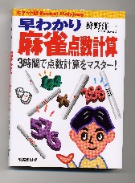

中国麻将の世界大会が東京で開催された。その模様が週刊新潮に紹介されていると聞いたので、近所のコンビニに買いに行った。そしたら数軒廻ってもどこにもない。（ふん、週刊新潮みたいな固い本は書店でないとダメか）と思いつつ、今度は近所の書店を数軒廻った。しかしやはりない。
最初からおいてない店もあれば、入荷がすくないため売り切れという店もあった。いずれにしても、在庫してない。（しゃあねえなぁ）と思いつつ、今度は、かなり規模の大きい店へわざわざ出掛けた。
（ここに無かったら、もう大都会の名古屋まで出掛けるしかないぞ）と思いながら店にはいる。探すのも面倒なので店員に聞くと、「少々おまちください」と言って調べてくれた。そして曰く。「申し訳ありません。売り切れです」。
人気がありすぎて売り切れではなくて、やはり入荷がすくないため売り切れということらしい。なんとまぁ。しょうがないので新潮は大都会で購入することにして、ついでに目に付いた麻雀本を２冊、買ってきた。

そのうちの１冊が、上記の本。ルールとか役の解説もあるが、基本的には点数計算についてのレッスン本。いろいろな例をあげて、Ｑ＆Ａ式にレッスンするようになっている。それはいいけれど、この分厚い（250ｐ）計算入門書をみていて、あらためて現行の点数計算システムの弊害を思った。
点数計算ができなくてもゲームはできるが、４人が４人とも出来ないのでは何ともならない。そこでゲームの本筋の事ではないことを習得するために、こんな分厚い本が必要とされる。
むかし或る麻雀団体に所属していた。まったくお金は賭けないで、純粋にゲームだけを楽しむ。しかし成績によって段位が取得できるので、みんなそれを励みに一生懸命ゲームしていた。その中に、ムラチョウというニックネームの会員がいた。
σ(-_-)より30才くらい年上のオジサン。気のいい人なので、みんなから「ムラチョウさん」と呼ばれていた。麻雀も上手で、当時５段であった。ところがこの人、当時すでに雀歴20年と言うことだったが、点数計算が出来ない。
そりゃぁそれまでの経験で、ピンフ型のアガリや点跳ねしないリーチアガリ(40符)くらいは、なんとかなる。しかし対々をアガったり、リーチアガリでも暗刻が２つあったりするともういけない。
片方が幺九牌の刻子なら、もうお手上げ。ようするに点跳ねかどうかが分からないのだ。そんなときはどうするかというと、ツモとかロンと言って手牌を倒したあと、天井を見上げて知らん顔している。(^-^；
みんなムラチョウさんが計算出来ないことを知っているから、「○○点ですね」と代わりに計算してやる。すると、自分でも経験で（それくらい）とは思ってるから、「うん、そう」と返事する。しかし段位の取得に点数計算が出来ることは条件になっていない。そこでゲームさえうまければ、５段まで取得できたわけだ。
あるときムラチョウさんに、「なんで計算、覚えないの？」と聞いたことがある。そしたら、「そんなもん知らんでもゲームはできる」という。たしかにそうには違いないが、そのムラチョウさんは、ときどきこんな目にあっていた。
誰かがムラチョウさんに放銃したとき、なにかの理由で放銃者の虫の居所が悪い。すると放銃者も一緒に天井を向いてしまう。「点棒が欲しけりゃ、申告してみろ」と言うわけだ。
それじゃあゲームが進まないので、他のプレーヤーが「○○点ですね」と計算してやる。するとムラチョウさんが、「おい、○○点だそうだ」という。放銃者も承知で意地悪してるわけであるが、大抵はそれで収まる。しかしムラチョウさんは、それからしばらくご機嫌ナナメ。
てな思い出でも分かるように、点数計算ができなくてもゲームは出来るしウマくもなる。ではあるものの、やはり肩身が狭い。そこで本筋でないことを習得するのに、それなりのエネルギーを費やさねばならないことになる。
ゲームの結果が点数で評価される以上、計算は大事に決まっている。しかし20年もやっている人がなりゆきでは覚えきれなかったり、こんな分厚い本にニーズがあるような現行の計算法は、少なくとも麻雀の普及という観点からは大きなマイナスに決まっている。
純麻雀式とは言わないが、せめて点数固定式くらいに簡明にすれば、もっともっと普及度は高くなるのではと改めて思った次第。
|